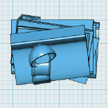

獎座設計
3D列印戒指

作品介紹：
為慶祝國立高雄大學第十七屆校慶，以校園中公共藝術「書香」咖啡傾倒在書上的原型， 製作本屆校級教學優良教師獎、傑出研究教師獎等十餘獎座。
公共藝術「書香」
3D列印修正後翻模與上色過程
原「書香」公共藝術為將近7公尺高的鑄銅作品 ，由戴曄建築師事務所藝術家李光裕打造，經等比例縮小，以及3D列印、打（翻）模、手工上色、 組裝等步驟，獎座高度為25公分高、重約500公克，本體為PU樹脂，底座為非洲柚木。